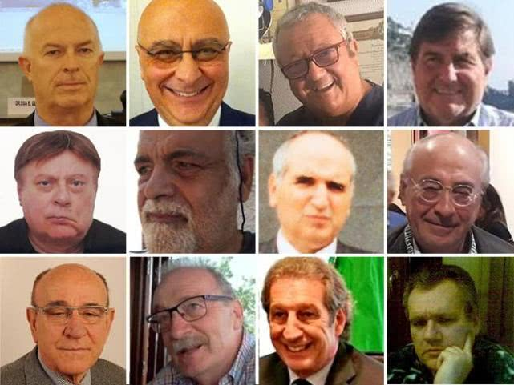

意大利怎么了（7）——汪玮的意大利疫情日记
原文链接 备份链接 原本今天不打算写日记的，因为我感觉有点疲劳，不是身体上的疲劳，是精神上的。大概从武汉开始封城或许甚至更早吧，新冠肺炎这件事一直占据着我每天所有的空余时间，各种景象和讯息塞爆了头脑，我感觉对它开始产生厌倦了。现在夜深了， …
这是汪玮意疫记的第12篇。
好几天没有记录了。发生了很多事。不过我们都很好，我，女儿，女儿她爸。Momo 和 Oliver——我们的两条狗——除了有一点抱怨出门时间太短次数太少之外，其他都很好。
我好像不太可能把所有发生的事情都说一遍。
那就说说我忍不住哭鼻子的事情吧。在上一篇纪录到这一篇之间，我一共有2次没忍住。在这之前，还有一次，2月6日的夜里，或者说2月7日的凌晨，那个夜里没睡觉的估计也有读这篇文字的你，还有无数个读不到这篇文字的人。为了一位医生。
今天也是为了医生。就在我写一篇名为“意大利死于新冠病毒的医生名单又添了5人”这一新闻稿的时候。
稿件内容如下：
“意大利医生死亡名单再添5人，一共死亡至少14位医生。 3月19日最新消息，意大利又有5名医生死于新冠病毒。自2月20日疫情爆发以来，一共已有至少14名医生死于新冠病毒，其中大部分是抗疫一线殉职。意大利医护人员感染人数占总确诊人数的8.3%，已有将近3000名医生、护士、急救热线工作人员和其他工种医疗一线人员确诊。 这新增的5个名单分别是：朱塞佩·芬济，62岁，帕尔马医院。路易吉·弗鲁尚特，71岁，去年退休，科莫人。朱塞佩·拉纳蒂，73岁，也是科莫人，呼吸科医生。安东尼奥·布塔佛戈，66岁，贝尔加莫家庭医生。路易吉·阿布隆蒂，66岁，克莱默纳医院前院长，后任克莱默纳安切拉诊所主任。 这些令人神伤的讯息由意大利外科与牙科医生协会发布，该协会主席菲利波·阿内里表示，“我们不能再允许我们的医生和医疗人员赤手空拳去抗击病毒了。因为这是一场不平等的决斗。它会给我们所有人和整个国家带来伤害和损失。“ 这一场决斗的敌人，或许从一开始就被轻视了。被它带走的医生大多在60岁以上，拥有丰富的职业经验，其中还有一位医生在去世前一天仍在为病患看病。”

意大利殉职医生
其实这篇短短的新闻稿里我并没把名单写完。其他9位的姓名与基本信息如下：
补充如下：马里奥·吉奥维塔，65岁，卡塔尼亚人，在贝尔加莫省一家医院当医生。马切罗·纳塔利，57岁，意大利医生医学协会洛迪省秘书长，在疫情首发地科多尼奥及周边地区工作。罗伯特·斯特拉，67岁，瓦莱塞医生协会主席，去世前最后一天还在邻近镇子布斯托·阿尔西奇奥维病患看病。伊瓦诺·维祖利，61岁，科多尼奥残疾人“友情”医学中心的医生，同时也是皮亚琴察足球俱乐部少年队队医。弗兰科·加利，65岁，曼托瓦省某镇家庭医生。马西莫·波尔盖塞，63岁，那不勒斯医生。拉斐尔·久拉，80岁，科莫医院呼吸科前主任。卡尔洛·扎瓦里特，80多岁，贝尔加莫小儿科与儿童精神科医生。朱塞佩·博尔济，64岁，卡萨尔普斯特尔伦科（离科多尼奥不远）医生。
除了这14名医生之外，殉职名单里还有一个我不会忘记的名字，他不是医生，也不是60岁以上老人，他只有47岁：贝尔加莫118急救热线工作人员迭戈·比安科。
意大利人纪念每一个人。不仅仅是医生、护士或者医疗人员，还有普通人。贝尔加莫回声报的讣告栏正常情况下有两三页纸，前几天，它一共刊登了10多页的讣告，上面有每一位新冠死者的照片、姓名及基本信息，还有子女亲朋想对他们说的一句话。
3月18日晚，70辆军车载着贝尔加莫市内公墓和殡葬业再无力承担后事的新冠死者遗体，带他们去往他乡安葬或火化。在死寂的黑夜里，军车缓缓穿行于市内大道上时，两侧房屋窗户里用手机拍下这一切的市民告别的或许就是他们的亲人，朋友或同事，他们在目睹一场未命名的国葬。3月19日意大利新冠病毒死者人数超过了中国。电影人朱塞佩·费奥莱罗在推特上截下其中一张军车运遗体得图片，建议举国哀悼3天，并呼吁人们不要再阳台上歌唱了。
军车运送贝尔加莫死者遗体
然而，就在不到一个星期前，孔特刚刚宣布封国的时候，我曾被阳台上的一首歌打动过。刚开始封城，人们开始相约在阳台上唱歌、演奏乐器、或者跳舞。没办法，拉丁民族喜欢唱歌，也喜欢跳舞。有一天写稿到半夜，听见了其中一首，《Il Mondo》，吉米·丰塔纳的名曲《世界》。具体在哪座城市不知道，好像是北方疫区的某个地方，老式平民楼，一层楼可以绕着走一圈，如果每家之间不隔着屏风的话，我家阳台就可以到你家阳台。他们各自站在家门口合唱，用背景音乐作陪衬的。
歌词如下：
“不，今夜，爱人，我没再想着你，我睁开了眼，为了看看周遭，我的周遭，世界运转如常，
转，世界在转，在无穷宇宙之中，带着刚诞生的爱，带着已完结的爱，带着喜悦亦带着苦痛，如我一般的人们。
一个世界，只有此刻，我望着你，在你的沉默中我迷失自己，在你身边我什么都不是。
这个世界，从未止歇一刻，天亮尽了总是会黑，之后天还会亮。”
这个名叫Coronavirus 或者Covid-19或者其他什么名称的病毒，它带来了死亡、痛苦、挣扎和泪水。它也带来了一种人自己也未知的力量。
一个才24岁医学院毕业没多久的那不勒斯年轻医生说，“我没想过，一毕业就遇到这个病毒，但是帮助病人就是我的工作，我喜欢我的工作，喜欢每一天向上战场一样地解决一个一个的难题。虽然有时候不成功。”他的眼睛里是医生才有的平静。他的一位女护士同事说，“我承认我害怕。但是这是我选择的工作。人们叫我们英雄？对不起，我不想当。我只是在做我的工作。”
最近一段时间，我唯一感到庆幸的是，报纸变得好看了。无论是《共和报》、《晚邮报》、《国家报》，还是任何一份意大利的报纸，绝大部分重要的版面全部都给了病毒和努力抗击它的人——医生、学者、研究者、病毒学家，护士、医疗人员，病人，亲属。政治人物鲜有露面了，除非总理孔特在必须的时候露面，那一定是又签署了一项什么法令。或者地方官员又有什么新的防疫举措。否则，所有的话语空间都留给了最该说话的人。靠政治钻营搞投机的人，统统靠边站。
意大利的医生和专家不是没有过分歧，一开始也有吉斯蒙多女医生的“大号流感”乌龙怪谈，但是这不影响另一种医生意见的表达。医生和专家之间也可以进行讨论、争论、辩论。

米兰萨科医院病毒学家吉斯蒙多和与之意见不同的病毒学家布里奥尼（左）
医生的语言是世上最理性的语言，但它又是世上最人性的语言。中国医疗队来了，古巴医疗队来了，委内瑞拉医疗队来了。每一个支援队的成员，是医生，但首先更是人。四川医疗队来意大利开过不止新闻发布会，我看了，我认为他们说的是医生的语言。
没有瘟疫的时候，我不相信人类，但我相信人。瘟疫到来的时候，我不相信神迹，我相信医生——以及藏在防护服底下的那个人。
免责声明
本文来自腾讯新闻客户端自媒体，不代表腾讯新闻的观点和立场。
原文链接 备份链接 原本今天不打算写日记的，因为我感觉有点疲劳，不是身体上的疲劳，是精神上的。大概从武汉开始封城或许甚至更早吧，新冠肺炎这件事一直占据着我每天所有的空余时间，各种景象和讯息塞爆了头脑，我感觉对它开始产生厌倦了。现在夜深了， …
原文链接 备份链接 今天是3月16日，月相为49%的下弦月。 It is March 16 with a 49 percent of Last Quarter. 距离新月还有 8 天。 There are 8 days until New …
原文链接 备份链接 澎湃新闻记者 南博一 为遏制新冠病毒的传播，3月8日，意大利封锁了该国北部的伦巴第大区和11个邻近省份，1600万人的自由流动受到影响，封锁将一直持续到4月3日。 “我们面临着一个紧急情况，一个全国性的紧急情况，” …
原文链接 备份链接 作为一个科学大国，英国是如何应对新冠疫情的？他们是否能走出一条和中国不同、社会成本更低而行之有效的防疫之路？为此我们采访了流行病学专家、牛津大学终身教授陈铮鸣。 英国于 1 月底确诊第一位来自中国的输入性新冠患者。截 …
原文链接 备份链接 题图来自网络 昨天我们给大家介绍了疫情下的美国的真实情况，今天我们移步到德国。截至3月7日晚，德国共有15个州（共16）出现新冠状肺炎，确诊847例，无死亡。 疫情下的德国纪实 文／大梨 在这场对抗新冠病毒的战争中，武 …